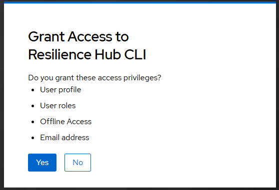
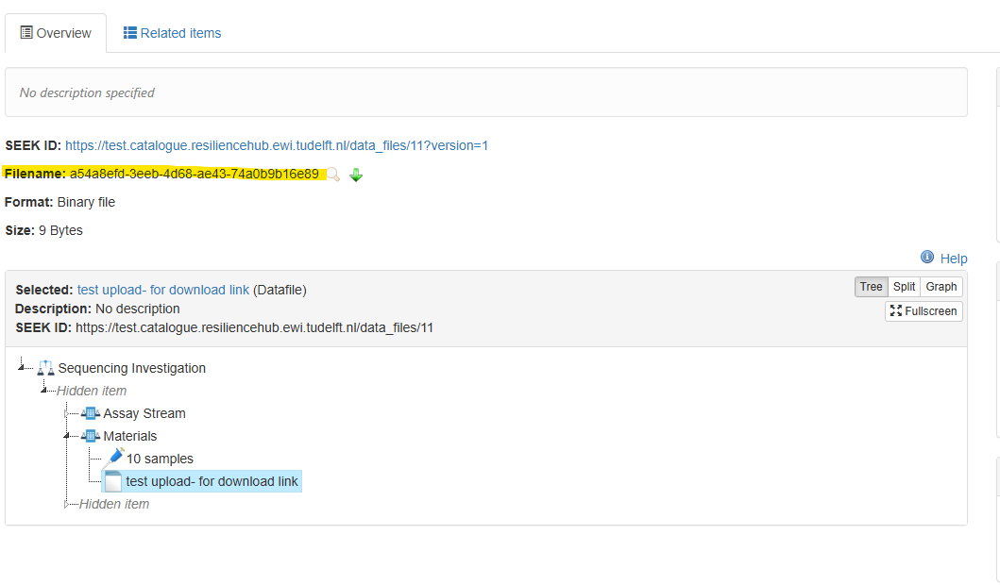

Upload and Download with the Command Line Tool¶
rhub is a command line tool for the Resilience Hub. It uploads a folder of data and connects it with your metadata in the catalogue. It also downloads the data you have access to. This page explains both.
You use the tool in a terminal. The terminal is the program "Terminal" on macOS and "PowerShell" on Windows. You find it by typing its name into the search of your computer.
Copy each command from this page into the terminal and press Enter. Some commands hold example values that you replace with your own. The page says which.
1. Install¶
You do this once.
Install git¶
Install uv¶
Close the terminal and open a new one.
Install rhub¶
If uv says that the tool folder is not on your PATH, run uv tool update-shell.
Set the addresses¶
The tool has to know where the Resilience Hub is and where you sign in.
Close the terminal and open a new one.
Check the installation¶
The answer looks like this.
0.2.0
signed in as: nobody, run rhub login
backend url: https://test.data.resiliencehub.ewi.tudelft.nl/api
2. Sign in¶
If you have never signed in to the catalogue, do that once in your browser first. The Resilience Hub knows you only after that.
The tool prints a link and waits.
Open the link in your browser and sign in. The browser then asks whether you grant the tool access. Click "Yes". The terminal continues by itself.

You sign in once. The tool remembers it.
3. Upload a dataset¶
Before you can upload
Your metadata has to be in the catalogue first, with the assay that the dataset belongs to. If it is not there yet, see SEEK Metadata Entry.
Find the assay id¶
Open the assay in the catalogue. The assay id is the number at the end of the address in the address bar of your browser.
In this example the assay id is 42.
Command to upload data¶
Put everything that belongs to the dataset into one folder. To upload it, run this command in the terminal.
Replace the three example values with your own.
| Example value | Replace it with |
|---|---|
/path/to/data |
The place of your folder on your computer. On macOS you can drag the folder into the terminal. On Windows it looks like C:\Users\anna\data\trial |
42 |
Your assay id |
Dataset Title |
The title of your dataset in the catalogue |
Keep the quotes around the place of the folder and around the title.
Once the upload has started, the tool reads every file once and then sends the files. It shows you the status.
A large dataset takes longer. Keep your laptop charging and make sure that it does not go to sleep.
Data upload successful¶
"Upload verified." means that all your files arrived unchanged. The work package lead of your project gets an email with the link in the last line and registers the dataset.
An upload cannot be changed afterwards
To correct a dataset, fix the folder on your computer and upload it again.
What one upload can hold¶
- Files smaller than 5 GiB each, and at most 10000 files.
- What can be sent within one hour. Split a larger dataset into several uploads.
To stop an upload, press Ctrl+C. A stopped upload has to be started again.
4. Download a dataset¶
You browse datasets in the catalogue. Find the dataset you want to download there and open it.
Find the identifier of the dataset¶
On the page of the dataset, stay on the tab "Overview". The line "Filename" holds the identifier of the dataset, a long code of letters, digits and hyphens. It is marked in yellow in the picture.

Copy the identifier.
Command to download data¶
Replace the two example values with your own.
| Example value | Replace it with |
|---|---|
3f2504e0-4f89-11d3-9a0c-0305e82c3301 |
The identifier of your dataset |
/path/to/folder |
The folder on your computer where the data should arrive. Choose a folder that does not exist yet, the tool creates it |
The tool shows you the status.
Fetching 3 files, 195.3 KiB.
195.3 KiB / 195.3 KiB (100%), 3 of 3 files, 2.4 MiB/s
Done. The resource is in /path/to/folder.
If a download was stopped, run the same command again and add --merge at the end. The files that finished are skipped.
5. When something goes wrong¶
| The message says | What to do |
|---|---|
RHUB_BACKEND_URL is not set |
Set the addresses, see Set the addresses, and open a new terminal |
rclone was not found |
Run the install command again, see Install rhub |
Not signed in or The stored sign-in could not be renewed |
Run rhub login |
The backend did not accept your sign-in |
Run rhub login. If the message stays, sign in to the catalogue in your browser once |
Could not reach the backend |
Check your connection. The Resilience Hub answers only on a TU Delft network or through eduVPN |
Invalid value for 'source' or Got unexpected extra argument |
Keep the quotes around the place of the folder and around the title, and check the place of the folder |
| You may not upload to the assay | Check the assay id. If it is right, ask the person who submitted the assay to add you as a creator |
| The credentials expired during the transfer | For an upload, split the dataset. For a download, run the command again with --merge |
| The folder already holds files | Choose a folder that does not exist yet, or add --merge to continue a download |
| The resource does not exist or you may not download it | Check the identifier, then ask the owner of the dataset |
Every command explains itself with --help, for example rhub upload --help.
6. Questions and feedback¶
Write to the DataXR team at data@cropxr.org. Include the output of rhub --version and rhub whoami, the command you ran, and what the tool printed. Never send a password or a token.
7. Update or remove the tool¶
To move to a new version, run the command of Install rhub again, with the new version number in place of v0.2.0.
These commands remove the stored sign-in and the tool.